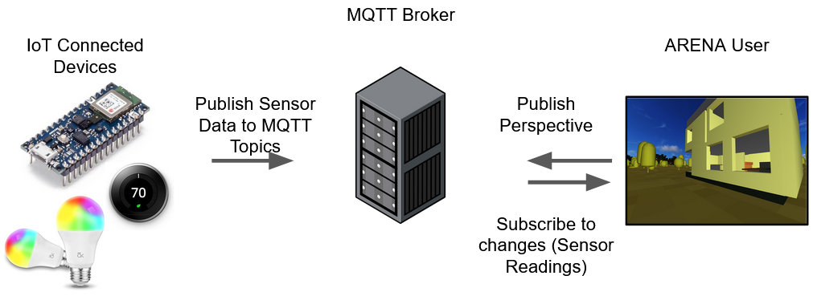

Tech Overview
If you want to see video demos, the "Results" menu bar link at the top contains them!
Overview
ARENA's goal is to make it easy to build mix-reality applications. As a result, it uses plenty of great technology stacks to ensure that the development and user experience is as smooth as possible. In the case of this project we were mainly concerned with how we would be able to utilize real-world sensors to provide feedback in the virtual world. As it turns out, ARENA allowed us to abstract this interaction to the high-level idea of publishers and subscribers using MQTT messages. From their documentation (link in references):"ARENA communications are a series of MQTT messages which govern all objects and their properties."
As a result, it hardly matters what sort of hardware, operating system, each IoT device is running, as long as it has some sort of capability to send and parse these very simple MQTT messages, interaction is possible. For example, an IoT sensor maybe "publish" its sensor readings to a certain "topic" in the ARENA, and only other devices/clients who care about those readings will "subscribe" to that topic. Devices are not limited to being only a publisher or subscriber. In the case of an ARENA web browser client connection, you are publishing your "camera" perspective as you move, subscribing to changes in other objects and other users' "camera" moves (This example is given in the ARENA documenation). 
Hardware and Software Technology
In terms of devices, we used the Arduino Nano 33 BLE Sense to perform our sensing (purchased as required hardware for the class). While a great board for its price, this version did not include any wireless capability outside of Bluetooth. Normally, as we mentioned above, you'd want to install a device specific library to send MQTT messages, but that was not possible with this device. Instead, we used the ARENA-py Python library and general Python capabilities to extract sensor data and forward it to the ARENA on the behalf of the Arduino [4]. With the exception of the Arduino code written in "Arduino-abstracted" C++, this project was almost entirely written in Python.3D Environment
For the purposes of demonstrating how you might use ARENA to manage your own home
a replica was created of Patrick's apartment using Blender, a free open-source 3D modeling tool:

 Interior shots:
Interior shots:

 Once the model is created in Blender, it can be exported in the .glb file format and imported direclty into the ARENA
scene of your choice, via the ARENA file store:
Once the model is created in Blender, it can be exported in the .glb file format and imported direclty into the ARENA
scene of your choice, via the ARENA file store:

Real and Simulated Data Use
Due to the COVID-19 pandemic, we were quite limited on hardware resources and space and were unable to meet together physically over the course of the project's design. Additionally, in terms of hardware, each of us only possessed a single Arduino Nano 33 BLE Sense (equipped with its various sensors). As a result, we had to simulate some of the sensor and feedback data for this project. For example, in the Generalized Heatmaps demo, we read real temperature and humidity data from the Arduino as a single source [6] and added some uniform noise in order to simulate having multiple sensors spread out in a room.
"Generalized Heat Maps" Demo Design
The goal of our second demo, "Generalized Heat Maps" is to provide functionality for mapping out any 3D signal in the space with multiple (simulated) sensors by adding 3D visual effects in the replicated space. Additionally there is a component that would allow for users to receive email alerts in case a sensor detects a hazardous anomaly (gas leak, flooding water, etc.) The main objectives to implement were:
- Generate a 3D heat map based on sensor measurements (simulated data based on 1 real data source)
- Have in-ARENA buttons to cycle through different maps (temperature, humidity, etc.)
- Have a simulated smart fan that shows the area cooling down when activated
- Receive email/notification alerts if a gas leak is detected (simulated gas sensor) and indicate there is a leak in-ARENA via some visual effects
Heat Map Cubes and Button Select
ARENA provides the ability to manipulate 3D object properties and animate them in a scene based on pretty much anything. For this demo we chose to use simple cubes in order to represent a heatmap. Each cube would have its size, color, and opacity changed depending on sensor readings. The following instantiates a cube object (within a for loop with counter variable i):
arena.Object(
objName = "cube" + str(i),
objType = arena.Shape.cube,
location = pos, # Tuple (x,y,z)
scale = (1,1,1),
clickable = True,
color = default_map_cube_color, # Tuple (r,g,b)
data = '{"material": {"opacity": 0.5}}'
))
Buttons (which are also cube-like arena.Objects) are also instantiated similarly with difference being they have a
a "clickable" attribute and a callback function specification to determine how they behave when clicked by
by the user. The callback function takes in the callback message as a single argument which allows the programmer
to decide what sort of events to take action on. In this case, when a user has a "mousedown" event:
def button_callback(event):
if event.event_type == arena.EventType.mousedown:
print("Source: ", event.object_id)
...
Each "event" instance also has the object associated with it, so we can share a single callback for each button
object simply by checking the event.object_id attribute (the objName attribute during instantiation above). For
this project, each button to select the type of sensor you want to see heatmap data from simply changes a global
variable named sensor_to_read (the sensor read function constantly polls this variable). The reason we chose to
do it this way was for a few reasons:
- At the time of this project, ARENA is still in heavy development, and documentation is understandably sparse
- Most of the example code utilizes globals this way, and generally scripts are small enough where you can reason about globals fairly easily
- On polling: This is really not a time critical application, and is good enough for the purposes of this demo
data_str = json.dumps({"material": {"opacity": output}})
map_cube.update(data=data_str)
The outputs for temperature (degrees C) and humidity (%) are scaled and clamped to the range 0-1 based on observed
min/max values that covering the Arduino with my hand was able to produce. As mentioned earlier, some uniform
noise is added here in order to simulate having multiple "real sensors".
Simulated Smart Fan
The simulated smart fan (as show in the demo video) and its associated on/off button are also represented as arena.Objects in the scene. For the demo, during the polling process we check to see which heatmap cubes are within some Euclidean distance from the fan, and a minus correction factor is added to simulate cooling-down or drying in the case of the humidity sensor. In-ARENA animations for objects are incredibly simple using the A-Frame Animation tools [3].Email Alert for Gas Leak Detection
Finally, an email alert system was developed in the case of a gas leak (simulated for this) or any other home disaster such as flooding from a burst pipe. ARENA also has the capability of creating plenty of visual lighting effects in addition to animating object manipulations in space. In this demo a red light was added during the "gas leak" above the stove [7], drawing alert attention to a certain area within the 3D space. This event can easily be tied to some sort of threshold on a real gas sensor.The email alert system, likewise, can be tied to a threshold and currently we've implemented the system to send the scene/home-owner an email when a leak is detected. The email can contain anything, but in our case we've decided to include a link to the ARENA scene: Reason being, that ARENA scenes can also be accessed on mobile device browsers, which makes them especially handy for when someone is away from home, and has no access to a computer! The details of implementation are included in utils.py for the demo source code, credit is given to RealPython.com for helping us get this setup [5].
"Smart Lock Management" Demo Design
The "Smart Lock Management" demo revolves around the idea of an IoT lock on the front door to the apartment. Often times people can end up in situations where they are injured or out of the house and they need to have some way to be able to unlock the door to their house through their mobile device or computer. Using the ARENA, we wanted to help tackle this problem, setting the following main objectives to tackle:
- Represent front door accurately in the ARENA interface and have simulated sensor data to request unlocking the door
- Have in-ARENA button to allow user to unlock door with corresponding animation involving ARENA door representation
- If door is unlocked, send serial data to the Arduino to have it start blinking, representing that the door opened in reality
- Receive email/notification alerts if someone requests the door to be unlocked so that the arena can be accessed from anywhere
ARENA-Arduino Interactivity
The main goal of the objectives above is to demonstrate some sort of interactivity between the Arduino and ARENA. This was made possible through use of serial ports to read and write data. In particular, we had a thread constantly running that was connected to our Arduino through its corresponding serial port. For this demo, data was sent to the port when the button to unlock the door was pressed that would then be read by the Arduino. The Arduino would respond to this data and start blinking its LED. Alternatively, if the button was pressed again to lock the door in the ARENA, the blinking would stop. This would happen even if the ARENA is being accessed from another device such as another computer or mobile device as shown in the demo. In particular the aim of this is to show how the ARENA can correspond to embedded devices.Door Animation and Interaction
The door was created as a scaled cube object in the ARENA, a default object included in the ARENA library. It was connected to another cube object that was set to be the button that controlled the door via a callback event. In particular, this event was specified as a mousedown event, which then used a very simple state transition machine to determine what animation to display depending on which state the door was in [3].
if event.event_type == arena.EventType.mousedown:
if door_status:
door_status = False
door_obj.update(data='{"animation":
{ "property": "rotation",
"from": "0 90 0", "to": "0 0 0",
"loop": false, "dur": 1000}}')
else:
door_status = True
door_obj.update(data='{"animation":
{ "property": "rotation",
"from": "0 0 0", "to": "0 90 0 ",
"loop": false, "dur": 1000}}')
...
As you can see above, the door_status variable is used to determine the state of the door and then A-Frame animation tools were used depending on the state
to simulate the opening and closing of the door. This door status variable was also used to determine the Arduino interactivity mentioned above as it would
determine whether the door was open or not and thus which message to send over serial to the Arduino.